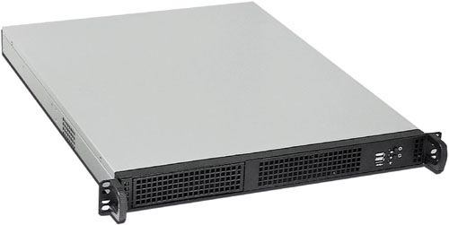
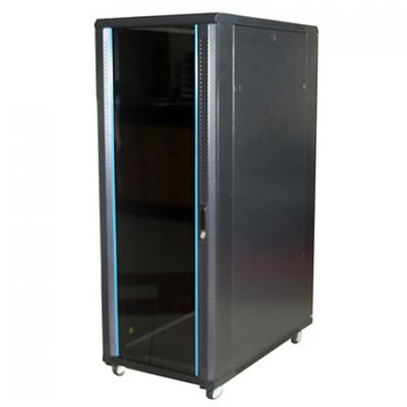

Laat ons eerst een fysieke server bespreken vooraleer we proberen uit te leggen wat een virtual machine is.
 |  |
| 1U server | 19" rack (grote kast, ongeveer 2m hoog) |
Eerst en vooral hoeft een server er niet uit te zien zoals de 1U server hierboven. De vormfactor van de server is zodanig dat deze past in een 19" rack. Servers worden dan boven elkaar gezet en dit bespaart je heel wat plaats ten opzichte van de hardware telkens in een klassieke desktop kast te monteren.
Eén server die in een 19" rack wordt geplaatst wordt ook wel aangeduid als een 1U server of 1 unit server. Hij neemt dan 1 voorziene plaats in de kast in. Er zijn ook 2U servers. Die zijn dan hoger qua afmetingen.
De hardware in een server is eigenlijk onbelangrijk. We spreken eerder van een server als hij ingezet wordt om een 'dienst' te leveren aan andere machines of gebruikers in het netwerk. We denken bijvoorbeeld aan een bestandsserver. Een server hoeft er dus zeker niet uit te zien als een 1U server.
Omdat een server gebruikt wordt door meerdere gebruikers zal de hardware echter meestal stevig zijn. Een krachtige processor, veel RAM geheugen en een snelle harde schijf zijn nodig om de vele gelijktijdige verzoeken van de gebruikers aan te kunnen. Het spreekt voor zich dat dit de machine duurder maakt.